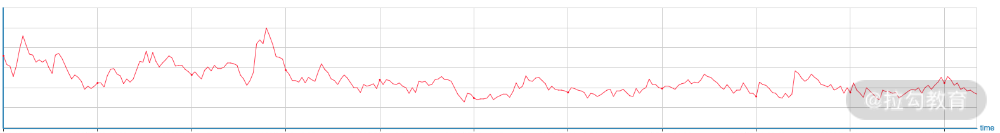

- 00 分布式链路追踪实战.md.html
- 01 数据观测：数据追踪的基石从哪里来？.md.html
- 02 系统日志：何以成为保障稳定性的关键？.md.html
- 03 日志编写：怎样才能编写“可观测”的系统日志？.md.html
- 04 统计指标：“五个九”对系统稳定的真正意义.md.html
- 05 监控指标：如何通过分析数据快速定位系统隐患？（上）.md.html
- 06 监控指标：如何通过分析数据快速定位系统隐患？（下）.md.html
- 07 指标编写：如何编写出更加了解系统的指标？.md.html
- 08 链路监控：为什么对于系统而言必不可少？.md.html
- 09 性能剖析：如何补足分布式追踪短板？.md.html
- 10 链路分析：除了观测链路，还能做什么？.md.html
- 11 黑白盒监控：系统功能与结构稳定的根基.md.html
- 12 系统告警：快速感知业务隐藏问题.md.html
- 13 告警质量：如何更好地创建告警规则和质量？.md.html
- 14 告警处理：怎样才能更好地解决问题？.md.html
- 15 日志收集：ELK 如何更高效地收集日志？.md.html
- 16 指标体系：Prometheus 如何更完美地显示指标体系？.md.html
- 17 链路追踪：Zipkin 如何进行分布式追踪？.md.html
- 18 观测分析：SkyWalking 如何把观测和分析结合起来？.md.html
- 19 云端观测：ARMS 如何进行云观测？.md.html
- 20 运维集成：内部的 OSS 系统如何与观测相结合？.md.html
- 21 结束语 未来的监控是什么样子？.md.html
- 捐赠
04 统计指标：“五个九”对系统稳定的真正意义
上一节课，我带你了解了怎样编写出更具有可观测性的日志，更具有可观测性的日志可以帮助我们更快速地定位问题产生的原因。统计指标和日志一样，也是无处不在的。这一节课，我就来带你了解一下统计指标。
指标功能
统计指标在日常生活中很常见，每月按时到公司的次数、每天代码提交的 commit 数等，都可以算是统计指标。它会记录系统在一段时间内的某个维度的数值，因此，它能最直观地体现出系统是否出现了问题。每一个统计指标都可以被量化为一个数值，因此，它是高度可量化的。根据这一特点，我们可以通过它完成一些工作，比如以下 2 个方面：
- 业务分析：产品一般可以通过业务型指标了解到产品上线之后的真实效果如何，从而优化下一步的产品决策。业务型指标包括成单率、用户留存等。
- 系统运行状态：通过在系统中埋点或是统计已有数据，比如最常见的 CPU 使用率、访问 QPS、响应耗时等，开发人员可以快速了解到系统的运行状态。
通过统计指标你能够感性地认识到整个系统的运行情况。出现问题后，各个指标数据会首先出现波动，这些波动会反映出系统是在哪些方面出现了问题，我们可以由此排查出现问题的原因。
前段时间我遇到了一个问题：使用 HttpClient 框架发送 HTTP 请求时总是会卡死，并且堆栈总会卡死在发送请求上。最后我去查询句柄的指标数据时，才发现是因为句柄被占满了，无法执行导致的卡死。
指标类型
介绍了指标的作用后，我们来看一下统计指标都有哪些类型，它们又分别有哪些不同的作用？
计数器（Counter）
计数器是一个数值单调递增的指标，一般这个值为 Double 或者 Long 类型。我们比较常见的有 Java 中的 AtomicLong、DoubleAdder，它们的值就是单调递增的。QPS 的值也是通过计数器的形式，然后配合上一些函数计算得出的。
图 1：计数器
仪表盘（Gauge）
仪表盘和计数器都可以用来查询某个时间点的固定内容的数值，但和计数器不同，仪表盘的值可以随意变化，可以增加也可以减少。比如在 Java 线程池中活跃的线程数，就可以使用 ThreadPoolExecutor 的 getActiveCount 获取；比较常见的 CPU 使用率和内存占用量也可以通过仪表盘获取。

图 2：仪表盘
直方图（Histogram）
直方图相对复杂一些，它是将多个数值聚合在一起的数据结构，可以表示数据的分布情况。
如下图，它可以将数据分成多个桶（Bucket），每个桶代表一个范围区间（图下横向数），比如第 1 个桶代表 0~10，第二个桶就代表 10~15，以此类推，最后一个桶代表 100 到正无穷。每个桶之间的数字大小可以是不同的，并没有规定要有规律。每个桶和一个数字挂钩（图左纵向数），代表了这个桶的数值。

图 3：直方图
以最常见的响应耗时举例，我把响应耗时分为多个桶，比如我认为 0~100 毫秒比较快，就可以把这个范围做一个桶，然后是 100~150 毫秒，以此类推。通过这样的形式，可以直观地看到一个时间段内的请求耗时分布图，这有助于我们理解耗时情况分布。
摘要（Summary）
摘要与直方图类似，同样表示的是一段时间内的数据结果，但是数据反映的内容不太一样。摘要一般用于标识分位值，分位值就是我们常说的 TP90、TP99 等。
假设有 100 个耗时数值，将所有的数值从低到高排列，取第 90% 的位置，这个位置的值就是 TP90 的值，而这个桶的值假设是 80ms，那么就代表小于等于90%位置的请求都 ≤80ms。
用文字不太好理解，我们来看下面这张图。这是一张比较典型的分位值图，我们可以看到图中有 6 个桶，分别是 50、75、80、90、95、99，而桶的值就是相对应的耗时情况。

图 4：分位值图
通过分位值图，我们可以看到最小值和最大值以外的一些数据，这些数据在系统调优的时候也有重要参考价值。
在这里面我需要补充一个知识点，叫作长尾效应。长尾效应是指少部分类数据在一个数据模型中占了大多数样本，在数据模型中呈现出长长的尾巴的现象。如图所示，最上面的 TP99 相当于这个图表的尾巴，可以看到，1% 用户访问的耗时比其他 5 个桶加起来的都要长。这个时候你如果通过指标查看某个接口的平均响应时间，其实意义不大，因为这 1% 的用户访问已经超出了平均响应时间，所以平均响应时间已经无法反映数据的真实情况了。这时用户会出现严重的量级分化，而量化分级也是我们在进行系统调优时需要着重关注的。
这种情况我们一般很难通过拨测、自己访问来复现。但我们通过观测这一部分内容，通过链路追踪的方式可以定位到问题的根源。这是我在后续课时中会介绍的。
常见指标
在本课时的最后，我会列举一些工作用常见的指标，你可以通过这些指标看到系统运行的情况。
QPS
Query Per Second，每秒查询的数量。QPS 在系统中很常见，它不再是单单和“查询”这个特殊条件绑定。QPS 现在也与请求量挂钩，我们可以通过这个值查看某个接口的请求量。假设我们在 1 秒内进行了 1 次接口调用，就可以认为在这 1 秒内，QPS 增加了 1。如果系统进行过压测，那么也可以估算出 QPS 的峰值，从而预估系统的容量。
SLA
Service Level Agreement，服务等级协议。SLA 是服务商和用户之间的协定，规定了服务的性能和可用性。根据这种可量化的协定，双方可以更详细地制定细则，比如没有到达一定的可用性时的赔偿方案。阿里云之前就规定了短信发送的 SLA 方案，并制定了详细的赔偿明细。具体细节可查看： https://help.aliyun.com/document_detail/63935.html?spm=5176.13910061.sslink.1.64b922b2xSbOT9。
最常见的可用性指标类似于“四个九”“五个九”，四个九指的是 99.99%，五个九就是 99.999%，以此类推。SLA 并不是一个固定的数值，“四个九”“五个九”只是代表系统可以保持稳定的时间。SLA 会因为成功数与请求数的不同而变化，可能是 95%，也可能是 80%，这需要我们去计算。
如果你要计算某个接口的 SLA 情况，就可以指定一段时间区间，然后依据以下的公式来计算：
总计成功数 / 总计请求数 = 百分比(%)
那总计成功数是怎么得来的呢？比如 HTTP 请求，状态码 200 就可以算是成功，此时成功数就可以 +1；dubbo 不出现异常时成功数就可以 +1。当然，这也不是一定的，根据公司内部的 HTTP 响应状态码等内容也可以更细粒度地规定，如果将相应结果中 json 的 code 值 1 定为成功，则满足条件是成功数也可以 +1。
你可能会问，这个 SLA 算出来之后和我们的工作有什么关系呢？比如说，我们需要保证这个服务 1 年的 SLA 是“五个九”。那么 1 年就是时间单位，由此我们可以算出服务不可用的时间：
1 年 = 365 天 = 8760 小时
三个九 = 8760 * (1 - 99.9%) = 8.76 小时
四个九 = 8760 * (1 - 99.99%) = 0.876 小时 = 0.876 * 60 = 52.6 分钟
五个九 = 8760 * (1 - 99.999%) = 0.0876 小时 = 0.0876 * 60 = 5.26 分钟
1 年内，该服务不可用的时间为 5.26 分钟。
由此可见，想要保证越多的“九”，就要保证服务稳定，缩短服务错误的时间，因此，它对系统稳定有重要的意义，“九”也成了公认的标准。
Apdex
Application Performance Index，应用性能指数。Apdex 会用响应耗时来判断用户对应用性能的满意度，并通过可量化的形式展现出来。通过这个量化的值，我们可以快速感知用户的满意程度。这也是首次和用户的使用体验相结合的一个指标。
Apdex 分为 3 个区间：
- 满意（Satisfactory）：用户对于这样的响应时间是十分满意的，感觉十分流畅。
- 容忍（Tolerating）：稍微慢了一点儿，但是可以接受。
- 失望（Frustrating）：实在太慢，快要放弃了。
有了这样的指标信息，无论你是否参与了这个服务的开发，无论你是否懂技术，都可以了解这个服务是否令人满意。
那这个衡量用户是否满意的值是怎样计算出来的呢？
它需要管理人员给一个时间单位 T，来表示当小于或等于多少秒的时候用户的感觉非常好的。映射到 3 个区间内，Apdex 规定，符合满意程度的是 1T，符合容忍程度的是 1T~4T，失望则大于 4T。通过这样的形式，我们就能得知当前请求是属于哪个区间的。
比如我们要计算某个时间段内的 Adpex 值，就可以通过这样的公式来计算：
(满意数量 + (容忍数量 / 2)) / 总数 = Apdex 值
通过这个公式，我们可以得出服务整体的 Apdex 值，这个值会在 0~1 的范围内。值越接近 1 代表用户的满意度越高。通过这样可自定义阈值的计算方式，如何衡量业务的满意度也有了一个可量化的标准。
结语
我相信通过对指标的介绍，你应该已经对指标有了更深刻的认识。你觉得除了我上面介绍的这 3 个常见的指标外，还有哪些是你经常关注的指标？ 欢迎在留言区分享你的看法。
下一节，我将带你了解各个数据源上都有哪些数据指标是可以观测的，帮助你更好地通过指标定位系统隐患。
© 2019 - 2023 Liangliang Lee. Powered by gin and hexo-theme-book.